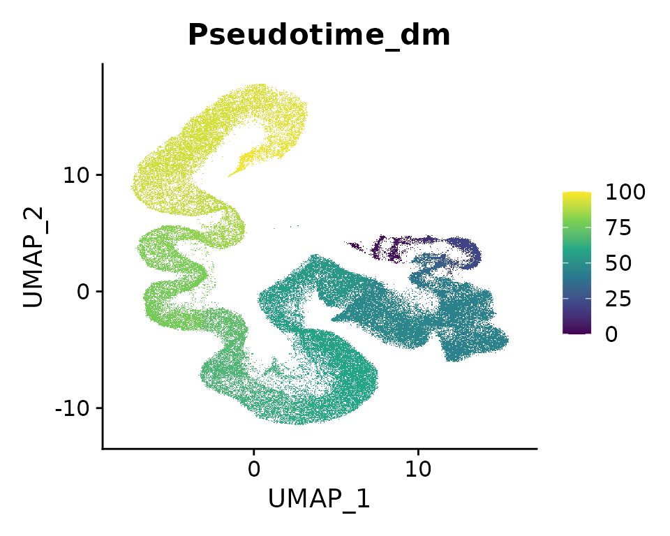
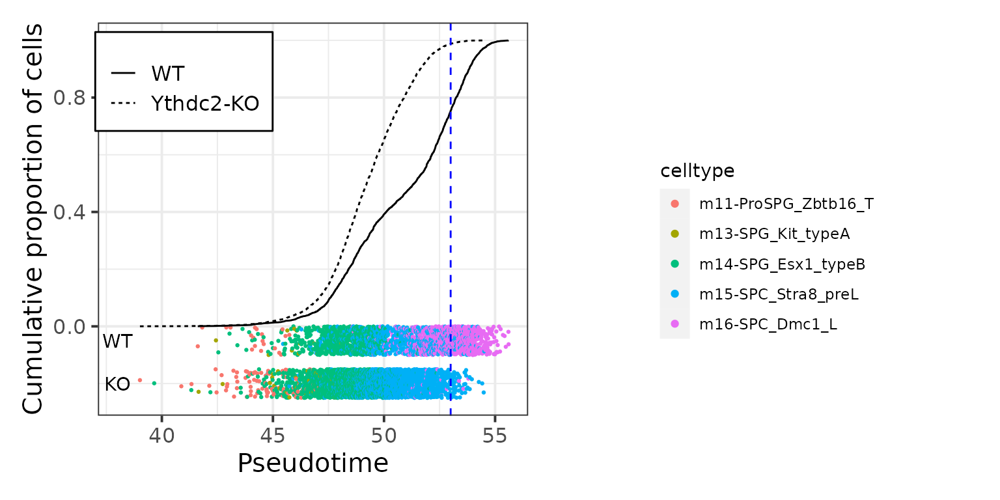

vignettes/misc_Ythdc2-KO_pseudotime.Rmd
misc_Ythdc2-KO_pseudotime.RmdTo be note, we can build reference model on not only UMAP embeddings,
but also any biological meaningful continuous variable, such as
pseudotime via ProjectSVR. Here, we show how to build
supported vector regression (SVR) model for pseudotime of germ cells in
mTCA.
library(Seurat)
library(ProjectSVR)
library(tidyverse)
options(timeout = max(3600, getOption("timeout")))
# reference model
if (!dir.exists("models")) dir.create("models")
download.file(url = "https://zenodo.org/record/8350732/files/model.mTCA.rds",
destfile = "models/model.mTCA.rds")
# reference atlas
if (!dir.exists("reference")) dir.create("reference")
download.file(url = "https://zenodo.org/record/8350746/files/mTCA.seurat.slim.qs",
destfile = "reference/mTCA.seurat.slim.qs")
# query data
if (!dir.exists("query")) dir.create("query")
download.file(url = "https://zenodo.org/record/8350748/files/query_Ythdc2-KO.seurat.slim.qs",
destfile = "query/query_Ythdc2-KO.seurat.slim.qs")
reference <- readRDS("models/model.mTCA.rds")
seu.ref <- qs::qread("reference/mTCA.seurat.slim.qs")
## subset germ cells
germ.cells <- rownames(subset(seu.ref@meta.data, !is.na(Pseudotime_dm)))
seu.ref <- subset(seu.ref, cells = germ.cells)
seu.ref## An object of class Seurat
## 32285 features across 97986 samples within 1 assay
## Active assay: RNA (32285 features, 2000 variable features)
## 1 dimensional reduction calculated: umap
FeaturePlot(seu.ref, reduction = "umap", features = "Pseudotime_dm", raster = TRUE) +
scale_color_viridis_c()
## gene set scoring
top.genes <- reference$genes$gene.sets
seu.ref <- ComputeModuleScore(seu.ref, gene.sets = top.genes, method = "AUCell", cores = 10)
Assays(seu.ref)## [1] "RNA" "SignatureScore"
DefaultAssay(seu.ref) <- "SignatureScore"
gss.mat <- FetchData(seu.ref, vars = rownames(seu.ref))
## training model
pst.mat <- FetchData(seu.ref, vars = "Pseudotime_dm")
colnames(pst.mat) <- "pseudotime_mTCA"
pst.model <- FitEnsembleSVM(feature.mat = gss.mat, emb.mat = pst.mat, n.models = 20, cores = 10)
## save model to reference object
reference$models$pseudotime <- pst.model
saveRDS(reference, "models/model.mTCA.v2.rds")
seu.q <- qs::qread("query/query_Ythdc2-KO.seurat.slim.qs")
## map query
seu.q <- ProjectSVR::MapQuery(seu.q, reference = reference, add.map.qual = T, ncores = 10)
## label transfer
seu.q <- subset(seu.q, mapQ.p.adj < 0.1)
seu.q <- ProjectSVR::LabelTransfer(seu.q, reference, ref.label.col = "cell_type")
## majority votes
feature.mat <- FetchData(seu.q, vars = rownames(seu.q))
cell.types <- FetchData(seu.q, vars = c("knn.pred.celltype"))
knn.pred.mv <- MajorityVote(feature.mat = feature.mat, cell.types = cell.types, k = 100, min.prop = 0.3)
seu.q$knn.pred.celltype.major_votes <- knn.pred.mv$knn.pred.celltype.major_votes
## predict the pseudotime
gss.mat.q <- FetchData(seu.q, vars = rownames(seu.q))
proj.res <- ProjectNewdata(feature.mat = gss.mat.q, model = pst.model, cores = 10)
## save results to the original seurat object
seu.q$pseudotime.pred <- proj.res@embeddings[,1]
query.plot <- FetchData(seu.q, vars = c("genotype", "pseudotime.pred", "knn.pred.celltype.major_votes"))
colnames(query.plot)[3] <- "celltype"
# remove somatic cells
query.plot <- subset(query.plot, celltype != "m24-PTM_Myh11")
cal_cum <- . %>%
arrange(pseudotime.pred) %>%
mutate(rank = order(pseudotime.pred)) %>%
mutate(cum = rank/max(rank))
ctrl_cum <- query.plot %>% subset(genotype == "WT") %>% cal_cum()
test_cum <- query.plot %>% subset(genotype == "Ythdc2-KO") %>% cal_cum()
segment.plot <- query.plot %>% group_by(celltype) %>%
summarise(min.pt = quantile(pseudotime.pred, 0.3),
max.pt = quantile(pseudotime.pred, 0.7)) %>%
arrange(min.pt)
N <- nrow(segment.plot)
data.plot <- rbind(ctrl_cum, test_cum)
p1 <- ggplot(data.plot, aes(pseudotime.pred, cum, color = celltype)) + geom_point()
data.plot %>%
ggplot(aes(pseudotime.pred, cum)) +
geom_jitter(inherit.aes = F, data = subset(data.plot, genotype == 'WT'),
aes(pseudotime.pred, -0.05, color = celltype, show.legend = TRUE),
height = 0.05, size = .5, alpha = 1, show.legend = F) +
geom_jitter(inherit.aes = F, data = subset(data.plot, genotype == 'Ythdc2-KO'),
aes(pseudotime.pred, -0.2, color = celltype),
height = 0.05, size = .5, alpha = 1, show.legend = F) +
annotate("text", x = c(38,38), y = c(-0.05, -0.2), label = c("WT", "KO")) +
geom_line(aes(linetype=genotype)) +
geom_vline(xintercept = 53, linetype="dashed", color="blue") +
labs(x = "Pseudotime", y = "Cumulative proportion of cells") +
theme_bw(base_size = 15) +
theme(legend.title = element_blank(),
legend.position = c(0.2, 0.85),
legend.background = element_rect(size=.5, color="black")) +
cowplot::get_legend(p1)
The pseudotime characterizes the progress of spermatogenesis in mTCA, through the distribution of the predicted pseudotime between WT and Ythdc2-KO germ cells, we can interpret that the Ythdc2-KO germ cells arrest at the pre-leptotene stage at transcriptome level.
## R version 4.1.2 (2021-11-01)
## Platform: x86_64-pc-linux-gnu (64-bit)
## Running under: Ubuntu 22.04.2 LTS
##
## Matrix products: default
## BLAS: /usr/lib/x86_64-linux-gnu/blas/libblas.so.3.10.0
## LAPACK: /usr/lib/x86_64-linux-gnu/lapack/liblapack.so.3.10.0
##
## locale:
## [1] LC_CTYPE=C.UTF-8 LC_NUMERIC=C LC_TIME=C.UTF-8
## [4] LC_COLLATE=C.UTF-8 LC_MONETARY=C.UTF-8 LC_MESSAGES=C.UTF-8
## [7] LC_PAPER=C.UTF-8 LC_NAME=C LC_ADDRESS=C
## [10] LC_TELEPHONE=C LC_MEASUREMENT=C.UTF-8 LC_IDENTIFICATION=C
##
## attached base packages:
## [1] stats graphics grDevices utils datasets methods base
##
## other attached packages:
## [1] lubridate_1.9.2 forcats_1.0.0 stringr_1.5.0 dplyr_1.1.3
## [5] purrr_1.0.2 readr_2.1.4 tidyr_1.3.0 tibble_3.2.1
## [9] ggplot2_3.4.3 tidyverse_2.0.0 ProjectSVR_0.2.0 SeuratObject_4.1.3
## [13] Seurat_4.3.0.1
##
## loaded via a namespace (and not attached):
## [1] rappdirs_0.3.3 scattermore_1.2
## [3] prabclus_2.3-2 R.methodsS3_1.8.2
## [5] ragg_1.2.5 bit64_4.0.5
## [7] knitr_1.43 DelayedArray_0.20.0
## [9] R.utils_2.12.2 irlba_2.3.5.1
## [11] data.table_1.14.8 KEGGREST_1.34.0
## [13] RCurl_1.98-1.12 doParallel_1.0.17
## [15] generics_0.1.3 BiocGenerics_0.40.0
## [17] cowplot_1.1.1 RSQLite_2.3.1
## [19] RApiSerialize_0.1.2 RANN_2.6.1
## [21] future_1.33.0 bit_4.0.5
## [23] tzdb_0.4.0 spatstat.data_3.0-1
## [25] httpuv_1.6.11 SummarizedExperiment_1.24.0
## [27] xfun_0.40 hms_1.1.3
## [29] jquerylib_0.1.4 evaluate_0.21
## [31] promises_1.2.1 DEoptimR_1.1-2
## [33] fansi_1.0.4 igraph_1.5.1
## [35] DBI_1.1.3 htmlwidgets_1.6.2
## [37] spatstat.geom_3.2-5 stats4_4.1.2
## [39] ellipsis_0.3.2 mlr3data_0.7.0
## [41] backports_1.4.1 annotate_1.72.0
## [43] MatrixGenerics_1.6.0 RcppParallel_5.1.7
## [45] deldir_1.0-9 vctrs_0.6.3
## [47] Biobase_2.54.0 here_1.0.1
## [49] ROCR_1.0-11 abind_1.4-5
## [51] cachem_1.0.8 withr_2.5.0
## [53] mlr3verse_0.2.8 mlr3learners_0.5.6
## [55] robustbase_0.99-0 progressr_0.14.0
## [57] checkmate_2.2.0 sctransform_0.3.5
## [59] mlr3fselect_0.11.0 mclust_6.0.0
## [61] goftest_1.2-3 cluster_2.1.2
## [63] lazyeval_0.2.2 crayon_1.5.2
## [65] spatstat.explore_3.2-3 pkgconfig_2.0.3
## [67] labeling_0.4.3 GenomeInfoDb_1.30.1
## [69] nlme_3.1-155 nnet_7.3-17
## [71] rlang_1.1.1 globals_0.16.2
## [73] diptest_0.76-0 lifecycle_1.0.3
## [75] miniUI_0.1.1.1 palmerpenguins_0.1.1
## [77] rprojroot_2.0.3 polyclip_1.10-4
## [79] matrixStats_1.0.0 lmtest_0.9-40
## [81] graph_1.72.0 Matrix_1.6-1
## [83] zoo_1.8-12 ggridges_0.5.4
## [85] GlobalOptions_0.1.2 png_0.1-8
## [87] viridisLite_0.4.2 rjson_0.2.21
## [89] stringfish_0.15.8 bitops_1.0-7
## [91] R.oo_1.25.0 KernSmooth_2.23-20
## [93] Biostrings_2.62.0 blob_1.2.4
## [95] shape_1.4.6 paradox_0.11.1
## [97] parallelly_1.36.0 spatstat.random_3.1-6
## [99] S4Vectors_0.32.4 scales_1.2.1
## [101] memoise_2.0.1 GSEABase_1.56.0
## [103] magrittr_2.0.3 plyr_1.8.8
## [105] ica_1.0-3 zlibbioc_1.40.0
## [107] compiler_4.1.2 RColorBrewer_1.1-3
## [109] clue_0.3-64 fitdistrplus_1.1-11
## [111] cli_3.6.1 XVector_0.34.0
## [113] mlr3tuningspaces_0.4.0 mlr3filters_0.7.1
## [115] listenv_0.9.0 patchwork_1.1.3
## [117] pbapply_1.7-2 MASS_7.3-55
## [119] mlr3hyperband_0.4.5 tidyselect_1.2.0
## [121] stringi_1.7.12 textshaping_0.3.6
## [123] highr_0.10 yaml_2.3.7
## [125] ggrepel_0.9.3 grid_4.1.2
## [127] sass_0.4.7 tools_4.1.2
## [129] timechange_0.2.0 mlr3misc_0.12.0
## [131] future.apply_1.11.0 parallel_4.1.2
## [133] mlr3cluster_0.1.8 circlize_0.4.15
## [135] rstudioapi_0.15.0 uuid_1.1-1
## [137] qs_0.25.5 foreach_1.5.2
## [139] AUCell_1.16.0 gridExtra_2.3
## [141] farver_2.1.1 Rtsne_0.16
## [143] digest_0.6.33 shiny_1.7.5
## [145] fpc_2.2-10 Rcpp_1.0.11
## [147] GenomicRanges_1.46.1 later_1.3.1
## [149] RcppAnnoy_0.0.21 httr_1.4.7
## [151] AnnotationDbi_1.56.2 mlr3mbo_0.2.1
## [153] mlr3tuning_0.19.0 ComplexHeatmap_2.10.0
## [155] kernlab_0.9-32 colorspace_2.1-0
## [157] XML_3.99-0.14 fs_1.6.3
## [159] tensor_1.5 reticulate_1.31
## [161] IRanges_2.28.0 splines_4.1.2
## [163] lgr_0.4.4 uwot_0.1.16
## [165] bbotk_0.7.2 spatstat.utils_3.0-3
## [167] pkgdown_2.0.7 sp_2.0-0
## [169] mlr3pipelines_0.5.0-1 flexmix_2.3-19
## [171] plotly_4.10.2 systemfonts_1.0.4
## [173] xtable_1.8-4 jsonlite_1.8.7
## [175] modeltools_0.2-23 R6_2.5.1
## [177] pillar_1.9.0 htmltools_0.5.6
## [179] mime_0.12 glue_1.6.2
## [181] fastmap_1.1.1 mlr3_0.16.1
## [183] class_7.3-20 codetools_0.2-18
## [185] spacefillr_0.3.2 utf8_1.2.3
## [187] lattice_0.20-45 bslib_0.5.1
## [189] spatstat.sparse_3.0-2 leiden_0.4.3
## [191] mlr3viz_0.6.1 survival_3.2-13
## [193] rmarkdown_2.24 desc_1.4.2
## [195] munsell_0.5.0 GetoptLong_1.0.5
## [197] GenomeInfoDbData_1.2.7 iterators_1.0.14
## [199] reshape2_1.4.4 gtable_0.3.4